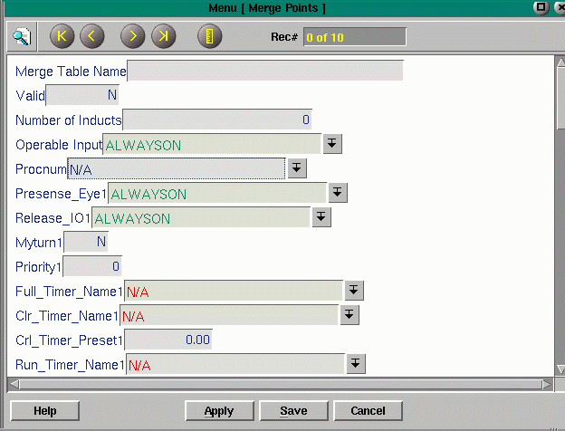

Merges
When two or more sections of conveyor merge into one, precise timing is required to cause smooth convergence and maintain desired spacing between product. Timers are an integral part of this operation.
The MergeMenu allows configuration of merges and pull downs into the timemenu from several fields, including, Full_Timer_Name, Clr_Timer_Name, Prs_Timer_Name and Run_timer_Name. These fields are repeated, allowing for configuration of up to 5 lanes of induction.
|
 |
The run_timer is set to allow a lane to release product for a given length of time. When the run_timer times out , a clr_timer will begin timing in order to allow product to clear the merge table. If product is present in additional lanes, each lane will release product in turn. If product is present in only one lane, that lane will continue to release until product is detected in other lanes.
The Merge Menu is accessed through Menu of Menus (F2), or by selecting Merges from the Configuration Utilities Menu. To add a merge to those shown, begin in the next available record which would be the first record showing N/A. Many fields are pull-downs into the menus from which a selection could be made, such as the timemenu and parts database.
The following are the fields in Merge Menu and their domain descriptions. The last eleven fields are repeated for each lane of induction. The fields for one induct are shown below. The four additional lanes follow the same pattern with a lane number 2, 3, 4, and 5. An N/A is advisable in the lanes not used.
Fields:
Merge Table Name - pulls down into parts database, the merge name, used as a reference
Valid - set by the code to true when field information proved valid
Number of Inducts - number of lanes merging
Operable Input - pull down into the parts database, typically a motor or other input which when not enabled should disable the merge
Procnum - pull down into the process menu
Presence_Eye1 - pull down into parts database, the presence photoeye
Release_IO1 - pull down into parts database, the I/O responsible for releasing product
Myturn1 - set by the code, an integer from 0 to 3 indicating lane status
0 - stopped
1 - releasing product
2 - looking for gap to stop
3 - stopped waiting for clearPriority1 - can be used to give a lane priority over others, lowest number has priority
Full_Timer_Name1 - pull down into timers, timer indicating a full lane
Clr_Timer_Name1 - pull down into timers, allowing product time to clear merge
Clr_Timer_Preset1 - preset duration for Clr_Timer
Run_Timer_Name1 - pull-down into timers, times the length of run
Run_Timer_Preset1 - preset time allotted for an induct to release product
Prs_Timer_Name1 - pull-down into timers, times presence at photoeye
Prs_Timer_Preset1 - preset time allotted for presence before setting 'iswaiting'
Each induct needs to keep track of certain information such as, is it my turn?, priority level, the photoeye showing presence and the I/O responsible for release. Four timers are used by each lane, the full timer, clear timer, run timer and presence timer. The clear timer begins timing each time product leaves the presence photoeye. Its purpose is to allow enough time for product to clear the merge table. The run timer allows a lane to have a pre-set length turn to release product unless product is no longer present. The presence timer starts when the presence eye detects product. When the presence timer times out, that induct is termed 'waiting'. The lanes are checked sequentially to determine who is waiting and has the lowest priority.
There are several ways to acquire the turn to run, releasing product. If each
induct has product and same priority, once the run timer and the clear timer
time out, the turn to run will pass to next induct who is waiting. The priority
can be set to give one lane priority over another. If a lane has product and
has a lower priority, it will interrupt the lane running to acquire its turn.
If product is no longer present in the running lane and its clear timer times
out, the turn will pass to the next induct who is waiting.
TO CONFIGURE A MERGE
This menu will set up any merges that are in your system. Using this menu you can "tune" a merge to get maximum throughput through the merge. For example, in a two to one merge you can set timers that will guarantee that each lane will get a turn to release product. If it is lane two's turn to release and there is no product waiting at lane two then lane one will continue to release until product is at lane two. This menu is set up so that each induct lane is grouped together. All fields with a 1 in the name are for lane one, all fields with a 2 in the name are for lane 2 and so forth. The lane number does not indicate priority.
1. Merge Table Name - is used to supply a name for the merge. This is a pull- down into the Parts Database Menu. Typically, you would select the motor for the merge table.
2. Valid - is filled in by the software. If you finish setting up the Merge Menu and you have used the Refresh Triggers button and this is an "N", your merge is not set up properly. It will be a "Y" when the merge is properly configured.
3 Number of Inducts - enter the number of lanes that will feed your merge.
4. Operable Input - is a pull-down into the Parts Database. This should be the motor starter for the merge table. This will allow the merge to operate only when that bit is on.
5. Procnum - using the pull-down, display CTRL in this field.
6. Presense_Eye - these fields will contain the photoeye that is located just prior to the merge table on each lane. These are pull-downs into the Parts Database menu.
7. Release_IO - these fields contain the output to be fired to release product onto the merge. These are pull-downs into the Parts Database menu.
8. Priority - this works best for most merges if they are all set the same. You can adjust the timers to set priority.
9. Full_Timer_Name - select the full timer for the accumulation conveyor that feeds the merge.
10. Clr_Timer_Name - this timer must be added to the timer menu and then displayed
in this field. This timer controls the amount of time between when one lane
stops inducting onto the merge and the next lane starts to release. Usually,
this is set to the amount of time it takes for a box to clear the merge table.
This is done so there will be no jams caused by two lanes releasing too closely together.
11. Clr_Time - you must enter the value of the clear timer in this field.
12. Run_Timer_Name - this timer must be created and then displayed here. This is the timer that controls the amount of time each lane will run if there is product waiting at each lane. So if you have one lane that will have twice the amount of product flow than the other lane set its timer to be twice as long as the other lane.
13. Run_Time - you must enter the value of the run timer in this field.
14. Prs_Timer_Name - this timer must be created and then displayed here. This timer is the amount of time from when the Presence eye is blocked to when the output to hold product prior to the merge is shut off. Typically, this is set to .5 seconds or less.
15. Prs_Time - you must enter the value of the Prs timer here.
Click Here for help with Merge Extras, a related menu.
Copyright © 2001 Fortna Inc. All rights reserved.